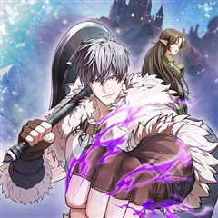
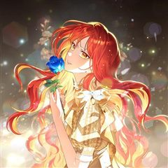
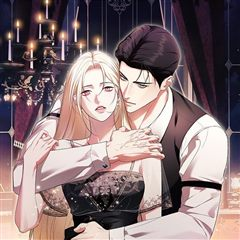
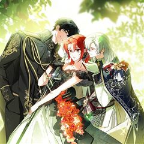

카카오웹툰 추천 인기 순위 TOP 30
카카오웹툰에서 지금 연재 중인 작품을 카카오웹툰 공식 인기 순위 순서로 모았어요. 네이버웹툰·카카오웹툰·레진코믹스에서 조건에 맞는 작품 944개 중 인기 순으로 30개를 골랐어요. 인기 TOP 3: SSS급 죽어야 사는 헌터, 픽 미 업!, 남주가 제 건강에 집착합니다
2026-10-15 기준 · 성인 작품 제외
내 취향으로 더 좁혀서 추천받기 →-
1
 카카오웹툰
카카오웹툰SSS급 죽어야 사는 헌터
F급 말단 헌터 ‘김공자‘. 랭킹 1위 ‘염제‘를 부러워하던 어느 날, 무려 S+급 스킬을 얻는다. 하지만 기쁨도 잠시, 어째 스킬 내용이 이상하다?! 상대의 스킬 중 1개를 복사한다,까지는 좋은데… "뭐? 내가 죽어야만 발동된다고?!" 죽어야 사는 헌터의 인간찬가 <SSS급 죽어야…
눈물샘자극학원물회귀카카오웹툰에서 보기 → -
2
 카카오웹툰
카카오웹툰픽 미 업!
그 누구도 던전의 끝까지 오르지 못한 극악의 난이도를 자랑하는 모바일 가챠 게임 <픽 미 업!(Pick me up!)> 마스터 오브 마스터라 불리는 세계 랭킹 5위의 마스터 '로키'는 던전을 깨던 중 정신을 잃게 된다. 깨어나 보니 레벨도 1, 등급도 1성인 <픽 미 업!> 속 영웅…
사이다액션게임판타지카카오웹툰에서 보기 → -
3
 카카오웹툰
카카오웹툰남주가 제 건강에 집착합니다
엑스트라로 환생했다. 남주의 존재감 없는 소꿉친구, 소설 초반에 죽는 엑스트라. 시한부라 데드 플래그를 피할 수도 없어서 그러려니 살고 있는데……. “왜 안 건강해?” “건강하란 말이야.” “왜 또 아프고 그래? 허락받고 아프라고.” 남주가 내 건강 집착광공이 되었다. 아, 제발 남주…
힐링로판카카오웹툰에서 보기 → -
4
 카카오웹툰
카카오웹툰관존 이강진
미친놈인가? 아니면 흔한 관심종자인가? 사람의 다름을 이해 못 하는 제자 이강진. 그리고 그걸 이해시켜주고자 하는 스승 곽노. 두 사제師弟의 따뜻한 휴먼스토리.
액션성장물카카오웹툰에서 보기 → -
5
 카카오웹툰
카카오웹툰템빨
[신영우 (유저 네임: 그리드)] 세계 최고의 가상 현실 게임 <SATISFY>. 현실에서나, 게임 속에서나, 불운은 항상 그의 곁을 맴도는데.... 퀘스트 수행 중 우연히 발견한 게임 속 로또, '파그마의 기서'. 20억 명이 넘는 유저 중 유일한 최강의 레전드리 직업으로 전직. "…
사이다학원물게임판타지카카오웹툰에서 보기 → -
6
 카카오웹툰
카카오웹툰무한의 마법사
마굿간에 버려져 평민으로 키워진 아이, 시로네. 타고난 통찰력으로 글까지 깨우친 아이는 도시로 나간 어느 날 그토록 궁금해하던 마법을 경험한다. 그 길로 마법사를 꿈꾸게 된 시로네. 하지만 신분의 장벽이 두터운 이 곳은 아이에게 냉혹하고, 그는 채 어른이 되기도 전에 이 세상의 이면을…
미스터리학원물성장물카카오웹툰에서 보기 → -
7

카카오웹툰판타지 세계 속 바바리안으로 살아가기
매일 밤 세상의 모든 신에게 기도했다. 부디, 잠에서 깨어난 다음 날 자신이 환상의 한가운데 있기를. 그리고 어느 날 바라고 바라던 기도가 이루어졌다. 단지 그가 바라는 것과는 전혀 다른 형태로. 자고 일어나니 하얗디하얀 세계 백색의 설원 속 '바바리안'이 되었다. '바바리안'이라는…
개그빙의카카오웹툰에서 보기 → -
8
 카카오웹툰
카카오웹툰결혼도 안 했는데 무슨 이혼인가요, 폐하
대륙의 절반이 들끓었던 영토 전쟁이 끝난 후로 십 년. 종전의 영웅, 아이작 메저린의 영지에 순금을 녹인 인장이 박힌 문서가 날아들었다. 아직 결혼도 안 한 외동딸 클리샤 메저린에게 보내온, 황제의 <이혼서>. 느닷없는 이혼으로도 미치고 팔짝 뛸 노릇인데, 황실 규범에 따라 10년간…
개그로판로맨틱코미디카카오웹툰에서 보기 → -
9
 카카오웹툰
카카오웹툰백작가의 망나니가 되었다
눈을 떠보니 소설 속이었다. 그것도 망나니로 유명한 백작가의 도련님 몸으로…. 그리고, 소설 속에서 나를 박살 냈던 막강한 주인공 최한이 곧 여기로 온다.
미스터리빙의카카오웹툰에서 보기 → -
10
 카카오웹툰
카카오웹툰퀴퀴한 일기
내 주변에 반드시 한 명은 있을 것만 같은, 어쩌면 나 같기도 한 그녀의 일기. 어느덧 40대의 아기 엄마가 된 주인공 이보람과 그의 군단들의 이야기이다. 너무나 시시하고 쩨쩨해서 누구에게 털어놓기도 멋쩍은 일들이 작은 마음을 가진 그들에겐 늘 뜨겁고 강렬하다! 마음속 깊이 숨어있는…
공감개그카카오웹툰에서 보기 → -
11
 카카오웹툰
카카오웹툰세자, 죽이기
궁중 하녀 모제비는 동궁 침방의 나인, 남모란을 모시며 평온한 나날을 보내고 있었다. 그러던 어느 날, 남모란이 거처를 옮긴 뒤 행방이 묘연해진다. 불안한 마음에 모제비는 몰래 동궁에 숨어들어 모란의 행방을 묻고자 했으나, 그곳에서 뜻밖의 비밀을 엿보게 된다. 동궁에 감춰진 끔찍한 진…
공감정치카카오웹툰에서 보기 → -
12
 카카오웹툰
카카오웹툰흑백무제
전란의 불이 타오를 때면 그 날이 떠오른다. 나의 가문, 벽산연가가 멸문하던 그 날이... 온몸을 꿰뚫린 아버지 비명횡사한 동생, 지평. 평생을 걸쳐 원수를 찾았지만 알 수 없었다. 누가. 그리고 왜. 살아났다. 그리고 돌아왔다. 벽산연가에. 그 말은 혈육을 도륙낸 원수를 다시금 찾을…
사이다액션회귀카카오웹툰에서 보기 → -
13
 카카오웹툰
카카오웹툰이번 생은 가주가 되겠습니다
“…한번 해 보자. 내가 가주가 되는 거야.” 제국에서 제일가는 가문, 롬바르디의 사생아로 환생한 피렌티아. 게다가 이 가문은 막대한 부는 물론 외교와 문화까지 통달한 말그대로 제국의 역사 자체! 금수저 오브 금수저 인생 당첨! 앞으로는 탄탄대로일 거라 생각했는데…. 아버지는 돌아가시…
사이다로판회귀카카오웹툰에서 보기 → -
14
 카카오웹툰
카카오웹툰황제궁 옆 마로니에 농장
'태양의 손'을 가진 농사 천재, 헤이즐 메이필드. 할아버지가 준 땅문서를 들고 설레는 마음으로 자신의 농장을 찾아가는데… "그 '대단히 높은 신분의 집주인'이… 황제였어?" 위대한 브라타니아 제국의 젊은 황제 이스칸다. 완전무결한 황궁을 꿈꾸던 그에게 닥친 최대 위기. "땅문서에 제…
힐링로판카카오웹툰에서 보기 → -
15
 카카오웹툰
카카오웹툰천재 궁수의 스트리밍
선수권 대회 최연소 우승자. 그러나 비운의 사고로 몰락한 천재 양궁 선수 유상현! 먹고살기 위해 게임 스트리머, 아몬드가 되는데…. [활을 선택하셨습니다.] 피융! 푸욱! "…보스 원래 한 방이에요?" [엄마! 나는 커서 아몬드가 될래요!] [이게 조선의 활이다ㅋㅋㅋㅋ] 미친 재능이…
서스펜스학원물카카오웹툰에서 보기 → -
16

카카오웹툰내가 죽은 뒤 꼬마 신랑은
8살이나 어린 꼬마 신랑과 정략결혼을 하게 된 리베냐. 불의의 사고로 죽었다. 눈을 떴더니 새로운 몸으로 빙의했다? 지긋지긋한 과거의 삶은 지우고, 새로운 삶으로 시작하려고 했는데... 우연히 만난 전남편의 상태가 이상하다? "단 한순간도... 널 잊은 적 없어." 10년이나 지났는데…
눈물샘자극설렘폭발로판빙의카카오웹툰에서 보기 → -
17
 카카오웹툰
카카오웹툰연습생
굴곡진 인생에 재미를 잃은 소년 우주 앞에 나타난 가수 연습생 평화는 무엇보다도 재밌고 설레고 빛이 나는 존재였다. 그저 평화가 데뷔하는 모습을 옆에서 바라보는 것만으로도 충분하다 생각해온 우주는 어느새 그의 옆에 서고 싶다는 목표를 가지게 된다. 거침없이 다가오는 평화에게 소중한 감…
설렘폭발BL카카오웹툰에서 보기 → -
18
 카카오웹툰
카카오웹툰너에게 빼앗을 왕관
내 평생을 바쳐 사랑한 사람. 그러나 사랑이라 믿었던 것은 배신이었고, 왕이었던 오라비는 나의 무지로 인해 죽었으며, 조국은 소리 없이 처참히 무너졌다. “다시… 돌아왔어.” 하지만 이번 생은 다를 것이다. 숙부에게 주어졌던 영광은 전부 빛을 잃을 것이며, 남편이 바랐던 찬란한 왕관은…
로판복수극카카오웹툰에서 보기 → -
19
 카카오웹툰
카카오웹툰갓 오브 블랙필드
"Who am I?" 프랑스 외인부대의 전설 '강찬'! 아프리카 전장에서 그를 상대한 자들은 공포와 경외를 담아 '갓 오브 블랙필드' 검은 땅의 신이라 불렀다. 하지만 수니파 추종 세력 SISS의 수뇌인 마살란 사살 작전에 투입된 강찬은 배후에서 날아든 의문의 총알에 전사하게 되고,…
서스펜스액션전쟁카카오웹툰에서 보기 → -
20

카카오웹툰처음이라 몰랐던 것들
위대한 시계 장인들의 딸이며 영웅, 빅토르 함장의 아내인 스칼렛 덤펠트. 그녀는 경찰청에서 취조를 받던 중, 빅토르의 왕실 복귀를 반대하는 자들에 의해 기억을 잃게 된다. "나가실 때쯤에는, 여기서 있었던 일을 기억하지 못하실 겁니다.” 사라진 일주일 간의 기억. 그리고 신문에 대서특…
눈물샘자극로판시대물카카오웹툰에서 보기 → -
21
 카카오웹툰
카카오웹툰카스트라토 ~거세 가수 이야기~
카스트라토는 아름다운 목소리를 유지하기 위해 성기 일부를 잘라낸 남성 가수를 말한다. 18세기 이탈리아 오페라가 꽃피우던 시기가 이들의 전성기였다. 음악학교이자 수도원인 피에타 데이 투르키니에서 어린 카스트라토 니콜라와 작곡가 지망생인 파트리크는 만나게 된다. 그리고 두 사람은 영원한…
개그성장물카카오웹툰에서 보기 → -
22
 카카오웹툰
카카오웹툰네 목을 비트는 새벽
[사랑이라 믿었다. 그가 내 심장을 꿰뚫기 전까지는.] 노예인 어미의 피를 이어받았다는 이유로 누구에게도 존중받지 못했던 왕국의 공주, 아르시노에. 그녀는 제국의 황태자 알레한드로와의 결혼으로 인생이 달라질 거라 믿었다. 사랑받는 아내로, 존경받는 황후로, 행복한 삶이 시작될 줄 알았…
서스펜스로판복수극카카오웹툰에서 보기 → -
23
 카카오웹툰
카카오웹툰철혈검가 사냥개의 회귀
바스커빌 가문의 사냥개 '비키르'. 사냥개로서 가문에 충성한 보답은 모함과 누명으로 얼룩진 단두대의 칼날이었다. "다시는 토끼를 잡고 나면 삶아지는 사냥개처럼 살지 않겠노라." 그런 그에게 죽음 대신 찾아온 뜻밖의 기회. 어둠 속에서 송곳니를 갈고닦는 비키르의 눈이 붉게 빛났다. "기…
학원물복수극카카오웹툰에서 보기 → -
24
 카카오웹툰
카카오웹툰재앙급 영웅님이 귀환하셨다
지상에 최강의 영웅이 있었다. “하지만 죽었잖아. 우리가 죽인 놈이 어떻게 돌아와?” “그러게. 돌아올 수 있으면 한번 돌아와 보라지.” 그런데 20년 만에 진짜 돌아와 버렸다? “뭘 그리 놀래? 왜. 양심에 찔릴 짓이라도 하셨나?” 이 XX들. 가만 안 둔다.
사이다학원물복수극카카오웹툰에서 보기 → -
25
 카카오웹툰
카카오웹툰가드패스
평소 먹는 것을 좋아해 뚱뚱하고 큰 체격을 가진 '임세준'. 그는 뚱보라는 놀림에도 신경 쓰지 않는 자존감이 높고 확고한 성격을 가졌다. 그에게 단 한 명의 친구 '서하진'. 그녀는 어릴 적부터 세준을 지켜주기 위해 늘 운동을 배워왔다. 어느 날 세준은 같은 반 일진과 트러블이 생기고…
사이다학원물배틀카카오웹툰에서 보기 → -
26
 카카오웹툰
카카오웹툰무림에 떨어진 현대인
생존을 위해 아르바이트를 하는 만년 공시생인 나. 한밤중 배달을 하다 과속하던 차에 쓰러졌다. 뺑소니로 요절했던 죽음의 기억이 강렬한데, ‘……내가 조휘?’ 어느 순간 다 쓰러져 가는 조가철방의 차남이 되었다. 날아가는 새를 떨어뜨릴 권세도, 의지를 관철시킬 무력도 없다. 일가족을 몰…
사이다액션게임판타지카카오웹툰에서 보기 → -
27
 카카오웹툰
카카오웹툰악녀라서 편하고 좋은데요?
"악녀라서 뭐? 편하고 좋기만 한데?" 2020년 카카오페이지 올해의 웹소설 <악녀라서 편하고 좋은데요?> 웹툰으로 화려하게 다시 태어나다! 은수저X, 금수저X :+: 오리하르콘 수저 :+: 악녀로 빙의한 윤도희 180,000,000도 인생 역전에 성공한다. 소심한 본체 그렇지 못한…
사이다로판빙의카카오웹툰에서 보기 → -
28
 카카오웹툰
카카오웹툰남궁세가 손녀딸의 귀환
혈마의 소교주 일화는 스승인 혈마의 뜻에 따라 남궁세가를 멸문시키지만, 혈마의 배신으로 인해 죽음을 앞두고 충격적인 이야기를 듣는다. “이제 천하에 남궁은 너 하나 남았다.” 일화는 자신이 남궁세가에서 오래전에 잃어버린 아이 ‘설화’였고, 간악한 혈마의 수작질을 위해 키워졌단 걸 알게…
로판회귀카카오웹툰에서 보기 → -
29
 카카오웹툰
카카오웹툰얼굴천재 0살 톱스타
하루만이라도 미남으로 살아보는 게 꿈이었던 조연배우 '이한조'는 선하게 살아온 삶에 대한 보상으로 아름다운 얼굴과 함께 소원을 들어주는 상태창과 환생한다. 비록 한겨울에 수녀원 앞에 버려진 천애고아 신세에 앞길이 막막하던 차에 재벌가 배우에게 입양되기까지 한, 운마저 너무 좋은 회귀…
직업드라마카카오웹툰에서 보기 → -
30

카카오웹툰장녀는 꽃길을 걷는다
아들을 원했던 부모에게 장녀란 쓸모 있지도, 사랑스럽지도 않은 존재였다. 틸로드 가문의 장녀로 태어나 언제나 희생을 강요당한 라디스. 그러나 온몸이 부서지도록 노력한 끝에 돌아온 것은 결국 가족들의 배신이었다. “다 헛된 꿈이었어. 부모님을 위해, 동생들을 위해, 가족을 위해, 가문을…
공감설렘폭발로판로맨틱코미디카카오웹툰에서 보기 →